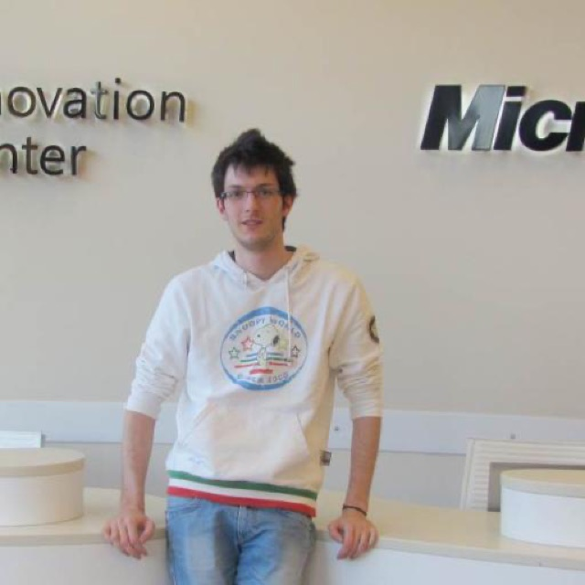

01 — Now
Engineer first.
Founder by way of the mountains.
I’ve been in love with technology since I was eleven, and shipping software since my second year of university — starting inside a Microsoft Research centre in Trento. In 2021 I co-founded MountainMaps with four friends from Trentino to answer a simple question: why do I spend hours searching for the right route, and never find one that’s truly tailored to me? Today I lead the technology behind an AI-powered navigation platform — the backend, the cloud infrastructure, and MIA, our AI mountain guide.
Off the trail: Silvia’s dad, basketball coach, based in Trento.

02 — MountainMaps
An AI mountain guide
in everyone’s pocket.
Ask for a hike in plain words, get a route you can trust — even offline, even in winter. MountainMaps covers all of Europe with offline topographic maps, ski-slope navigation and MIA, an AI assistant that turns “take me to Rifugio Locatelli” into a full itinerary.
Offline maps of all Europe
Routes from natural language
Winter mode for ski resorts
As covered by Sky TG24 · RAI 1 · Forbes · StartupItalia · il Dolomiti · Corriere del Trentino
03 — The Journey
Base camp to summit.
-
2021 →
Co-founder & CTO — MountainMaps
Co-founded on nights and weekends in 2021 — full-time since 2024. Leading engineering: backend, GKE, CI/CD, and the AI features behind MIA. From zero to an app hikers rely on across Europe.
-
2018–24
Technical Lead — AlmavivA
Led front-end engineering on enterprise public-sector platforms; designed and taught Angular training courses for AlmavivA’s development teams.
-
2016–18
Web Developer — Factory Mind
Angular 2+ single-page apps on a .NET Core backend, as external consultant for SEAC S.p.A.
-
2014–16
Junior PM & Web/Mobile Developer — PharmaFox
Built fleet-management software (.NET MVC) and a cross-platform pharmacy app (Xamarin); ran projects and teams with Scrum.
-
2011–12
Web Developer — Green Prefab
Research project with Microsoft Research Europe and BSC: cloud rendering of sustainable prefab buildings on Windows Azure — published by Microsoft Research ↗
-
2010–11
Web Developer — Microsoft Research & UniTrento (COSBI)
First production code at the Centre for Computational and Systems Biology — while still an undergrad.
-
2009–13
BSc Computer Science — University of Trento
Lead of the Microsoft Student Partners along the way.
04 — Community & Writing
Giving back to the trail.
05 — Contact
Say hi — it’s still free.
Product ideas, mountain tech, or just a good trail suggestion.